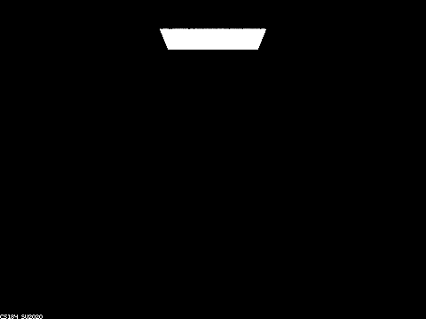
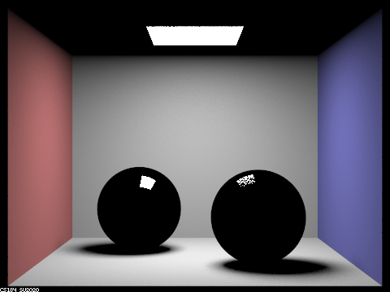
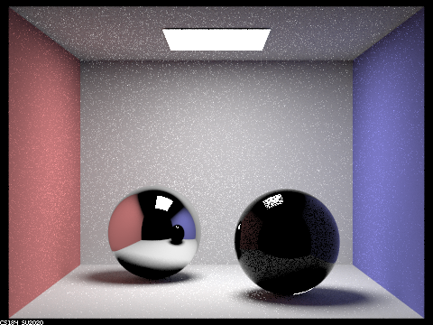
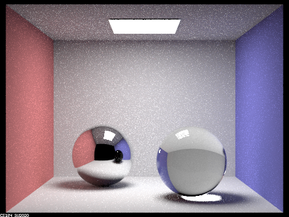
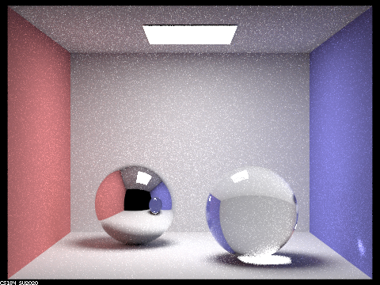
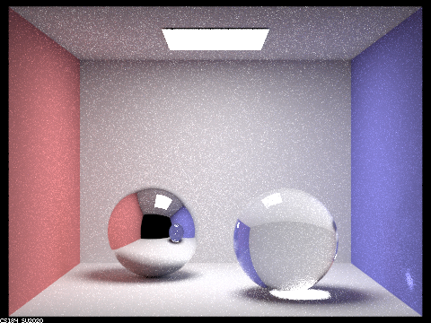
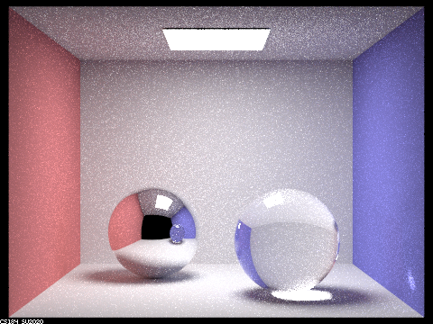
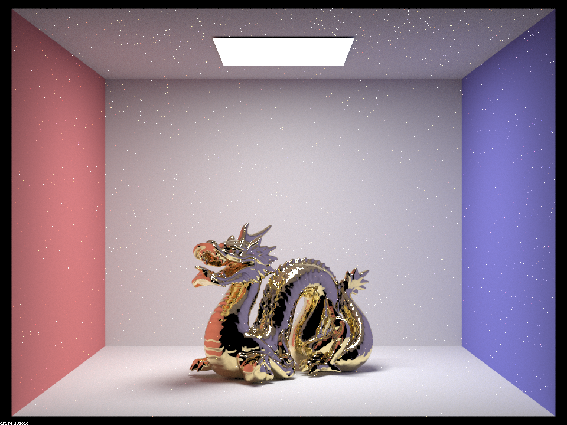
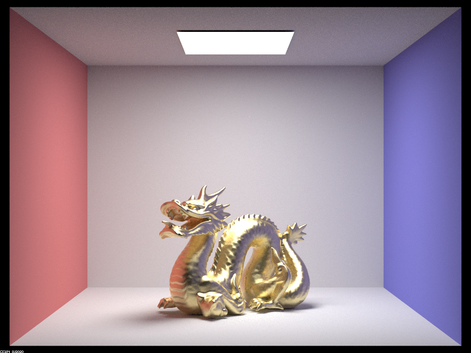
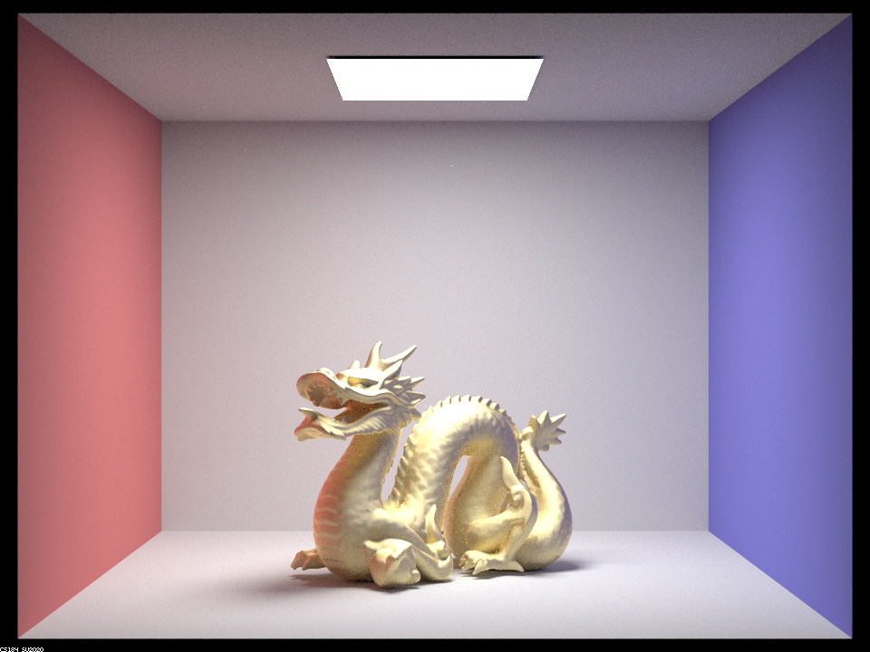

Part 1. Mirror and Glass Materials
In Part 1, we implemented mirror and glass material Bidirectional Scattering Distribution Functions (BSDF), which made it possible to render scenes containing objects with these materials. For mirror materials, the probability density function (PDF) is set to 1. In the sample_f function, we return the direction of the reflected ray by setting its x to -x, its y to -y and keeping the same z because the ray is in the local object coordinate system, where the intersection point is the origin (0, 0, 0) and the z direction is the direction of the normal.
For refracted materials, the probability density function (PDF) is also set to 1. In the sample_f function, we return the direction of the refracted ray by using Snell's Law. The ray may not refract at all due to the Total Internal Reflection.
The incoming ray may be entering from air into the material, or coming from the material and entering air. Depending on which one of the two cases the ray is, we calculate the ratio eta of the old index of refraction (ior) to the new index of refraction. The image below shows the diagram of the two cases when the ray is entering or exiting a non-air material. The air index of refraction is 1.0.

eta. Credit: Project 3-2 Part 1 Spec.Glass material is made by combining reflection and refraction code. We used Schlick's approximation to decide what the ratio of reflection to refraction should be for each ray. If the ray does get refracted, then we probabilistically either reflect it or refract it, according to the Schlick's formula, shown below.

R. Credit: Wikipedia.Below are the example images rendered after glass and mirror BSDF are implemented. The image CBdragon.dae contains mirror only, the image CBlucy.dae contains glass only, and the image CBspheres.dae contains both mirror and glass. Three images below are rendered with using 256 samples per pixel, 4 light rays per pixel, maximum ray depth of 7, and a resolution of 480 by 360 pixels.

CBdragon.dae contains mirror material only.
CBlucy.dae contains glass material only.
CBspheres.dae contains mirror and glass materials .Show a sequence of six images of scene `CBspheres.dae` rendered with `max_ray_depth` set to 0, 1, 2, 3, 4, 5, and 100. The other settings should be at least 64 samples per pixel and 4 samples per light. Make sure to include all screenshots.

CBspheres.dae with m = 0. |

CBspheres.dae with m = 1. |

CBspheres.dae with m = 2. |

CBspheres.dae with m = 3. |

CBspheres.dae with m = 4. |

CBspheres.dae with m = 5. |

CBspheres.dae with m = 100. |
All CBspheres.dae rendered with -s 128 and -l 8.
At m = 0, only zero_bounce_radiance is counted, so only the light is sampled.
Similarly, when m = 1, only one_bounce_radiance is counted, so the mirror and glass balls don't have a change to reflect or refract any rays, leading to their black appearance, except for the small portion which directly reflects the light.
We can see that reflections of the room appear at m = 2, with the perfect mirror ball showing a much brighter reflection than the glass ball. Some of the limits of 2 bounces include the refracted rays in the glass ball not being able to reach any form of light, and the reflections in the mirror ball of the roof and glass ball similarly not being able to reach a light source within the small number of bounces.
At m = 3, the glass ball's refracted rays are able to exit the other side, leading to a transparent object, and the reflection of the roof in the mirror ball is now lit. The refracted light in the glass ball also now casts a concentrated bright spot on the floor.
At m = 4, this concentrated spot is now reflected onto the right wall. The reflection of the glass ball in the mirror ball is also now visible.
At m = 5, the reflected image in the mirror sphere is becoming brighter, but the overall appearance is similar to the image at m = 4. There aren't many differences between m = 4 and m = 5.
At m = 100, the reflected ceiling image in the mirror sphere is even brighter, since more light rays bounce off and the color of each reflected pixel is close to its true color (white). However, other details closely resemble what the image looks like at m = 4 or m = 5.
As a tradeoff between speed and accuracy, we thought m = 4 is roughly the sweet spot where all the elements appear to be rendering properly without taking too much time to render.
Part 2. Microfacet Material
In Part 2, we implemented the microfacet BSDF. The Microfacet model represents rough surfaces on a small scale that are treated like reflective mirrors. If the surface has a lot of reflective micro surfaces or bumps, then it will be mostly specular on a macro-level. If, on the other hand, the reflective micro surfaces are distributed throughout the object and these micro surfaces are not concentrated, then the object will appear to be diffuse. What makes a difference in material appearance is the distribution of micro-surfaces normals.
We use the formula below to compute the Microfacet BSDF.
Where F is the Fresnel term, G is the shadowing-masking term, Dis the normal distribution function (NDF), n is the macro surface normal, which is always (0, 0, 1) in object coordinate system, and h is a half vector.
We implemented each of the terms above, in turn. For the Normal Distribution Function (NDF), we used the Beckmann distribution. The NDF is defined by the formula below.
where $\alpha$ is the roughness of the macro surface, $\theta$ is the angle between the half vector $\\h$ and the macro surface normal $\\n$ . The $\alpha$ is a measure of smoothness. The smaller the $\alpha$ the smoother the material, so it will appear glossy and shiny like metal.
Show a screenshot sequence of 4 images of scene CBdragon_microfacet_au.dae rendered with $\alpha$ set to 0.005, 0.05, 0.25 and 0.5. The other settings should be at least 128 samples per pixel and 1 samples per light. The number of bounces should be at least 5. Describe the differences between different images. Note that, to change the $\alpha$, just open the .dae file and search for microfacet.
The four images below were generated by modifying CBdragon_microfacet_au.dae to set the $\alpha$ values from 0.005 to 0.5, and using 256 samples per pixel, 4 sample per light, 7 maximum ray depth, and a resolution of 480 x 360 pixels.
|

|
|
|

|

|
The smallest value of $\alpha$ produces the smoothest, most glossy image of the dragon. The reflections of the room, including the black background can be seen reflected in the lower portion of the dragon's neck. The specular reflections can be seen in the tail underneath the light. The overall image has more grainy pixels scattered throughout the image because of the light rays reflecting off the shiny dragon.
When $\alpha$ is 0.05 (ten times larger than before), the dragon appears shiny, but not as shiny as when $\alpha$ is 0.005. For example, the reflections of the light are not as pronounced, which makes sense because the larger $\alpha$ means a more diffuse material.
When $\alpha$ is 0.25, the dragon appears slightly shiny, but almost no room background can be seen reflected. The material scatters light in a more diffuse or uniform manner.
The largest $\alpha$ of 0.5 produces the most diffuse dragon, which appears almost matte, where the body of the dragon does not reflect light outside the room as it did for smaller values of $\alpha$. This image overall looks the smoothest, in terms of pixel values. There are almost no random grainy artifacts that can be seen in the images with small $\alpha$ values.
Show two images of scene `CBbunny_microfacet_cu.dae` rendered using cosine hemisphere sampling (default) and your importance sampling. The sampling rate should be fixed at 64 samples per pixel and 1 samples per light. The number of bounces should be at least 5. Briefly discuss their difference.
The two images below of CBbunny_microfacet_cu.dae were rendered using 64 samples per pixel, 1 samples of light, 5 maximum ray depth, and a resolution of 480 x 360 pixels.

|

|
At each pixel, the uniform sampling randomly sends a ray chosen from a hemisphere around the pixel. Therefore, most rays randomly created don't hit the light source. As a result, the image with uniform sampling looks a lot darker and grainer than the image using importance sampling. The reflective parts of the bunny with uniform sampling especially look dark and grainy because the chances that the ray from the camera hits the bunny, reflects and hits the light is a lot smaller when the direction of each ray is chosen randomly. That results in many dark pixels, that bounce off the bunny but don't hit the light. In contrast, in importance sampling, each light ray through a pixel is chosen to originate on the light source. If that ray has an intersection at the pixel, then the total radiance of the light will be added. As a consequence, the image looks brighter and less grainer, with reflective parts mirroring the dark background.
Show at least one image with some other conductor material, replacing `eta` and `k`. Note that you should look up values for real data rather than modifying them arbitrarily. Tell us what kind of material your parameters correspond to.

CBbunny_microfacet_cu.dae with manganese metal refractive index.
The image above uses manganese as a conductor material. n is eta in the code, k is k in the code.
These values come from the refractive index website linked in the spec. We replaced the following values in the code:
@ 614nm (red): n = 2.5066, k = 3.5306
@ 549nm (green): n = 2.39, k = 3.33
@ 466nm (blue): n = 2.17, k = 3.04
Part 3. Environment Light
We didn't implement Part 3.
Part 4. Depth of Field
We didn't implement Part 4.
This project was a team effort. We worked on each part by ourselves first, then met to discuss the solution. When didn't encounter any severe bugs in this project. In the end, we each worked on all parts of the project, either as the main author or as a debugger or as a co-author of the write-up. If one of us coded more of the implementation for a certain part or function, we alternated the writeup, so that the person who didn't write the bulk of the code could have a chance to read through and understand the code. Overall, it was rewarding to see pretty pictures of interesting materials.